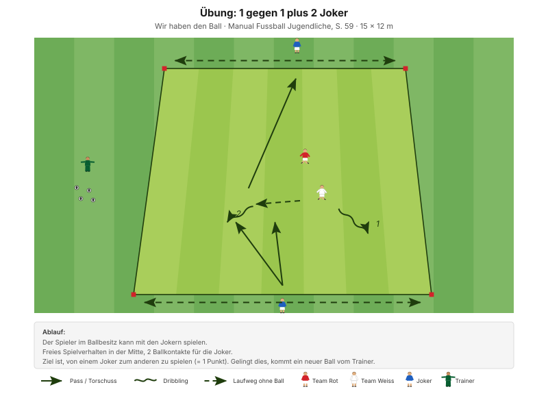
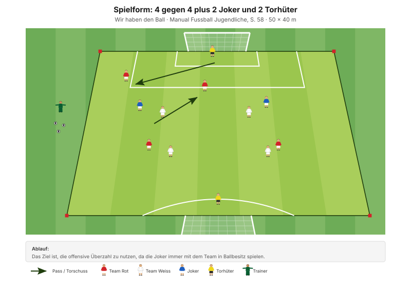

Überzahl entsteht nicht von selbst – sie muss hergestellt werden. Der Trick ist immer derselbe: Einen Gegner binden, damit ein Mitspieler frei wird.
"Das Spiel variantenreich und situationsangepasst aufbauen" Erscheinungsform B1, Manual Fussball Jugendliche, S. 57
Der Coachingsatz des Abends steht im Lernbaustein und gilt in jeder Form: Defensivspieler binden, dann die Entscheidung Pass oder Dribbling am Verhalten des Verteidigers festmachen. Wer auf den Verteidiger zuläuft, zwingt ihn zu einer Reaktion – und erst diese Reaktion beantwortet die Frage.
| Zeit | Min | Teil | Inhalt |
|---|---|---|---|
| 0–4 | 4 | Besammlung | Thema ansagen, Zweierteams bilden |
| 4–16 | 12 | E1 | Linien zusammen überspielen · Big 4 zwischen den Wiederholungen |
| 16–22 | 6 | E2 | Zu zweit Tore erzielen |
| 22–30 | 8 | E3 | Richtungswechsel und linearer Sprint (Explosivität) |
| 30–45 | 15 | H1 | 1 gegen 1 plus 2 Joker |
| 45–48 | 3 | Pause | Trinken, Feld vergrössern, Tore stellen |
| 48–70 | 22 | H2 | 4 gegen 4 plus 2 Joker und 2 Torhüter |
| 70–82 | 12 | Abschluss | Freies Spiel 5 gegen 5 plus 2 Torhüter |
| 82–90 | 8 | Ausklang | Cool-down, zwei Entwicklungsfragen, Verabschiedung |
| Total | 90 |
Einstieg 26 · Hauptteil 37 · Abschluss 20 Min. – nach dem Trainingsschema des Manuals (S. 43).
Nur einmal umbauen: Das Linienfeld des Einstiegs bleibt bis zur Pause stehen. Danach fallen die Linien weg, es entsteht das Spielfeld für H2 und den Abschluss.
Eigene Skizze · Platzaufteilung
Nur einmal aufbauen – das Einstiegsfeld liegt im späteren Spielfeld.
12 Minuten · 32 × 24 m · alle 12 Spieler
Eigene Skizze · Linien zusammen überspielen
Eigene Skizze · Linien zusammen überspielen
3 Wiederholungen à 1'30''–2' – zwischen den Wiederholungen je zwei Präventionsübungen.
"Defensivspieler binden/fixieren – Entscheidung Pass oder Dribbling anhand des Verhaltens der Defensivspielerin" SFV-Lernbaustein "Einstieg TA: Überzahl ausspielen", Phase 1
Weil der Verteidiger auf seiner Linie bleibt, ist die Situation immer dieselbe: 2 gegen 1. Genau deshalb eignet sie sich zum Lernen – der Rest des Spiels ist ausgeblendet.
Je zwei Übungen zwischen den Wiederholungen, 25 Sekunden pro Übung:
| Bereich | Übung | Worauf achten |
|---|---|---|
| Fussgelenk | Einbeinsprünge seitlich | Bei der Landung knickt das Knie nicht ein, Oberkörper leicht nach vorne, Blick nach vorne. |
| Knie | Dynamische Ausfallschritte | Das Knie knickt nicht ein und bildet einen rechten Winkel. |
| Hüfte | Mobilität in tiefer Position | Die Fersen bleiben in Kontakt mit dem Boden, der Blick ist nach vorne gerichtet. |
| Hamstrings | Brücke mit Fersengang | Becken hochhalten, damit Schulter, Hüfte und Knie eine Linie bilden. |
"Arbeit mit Zeitvorgaben – nicht mit Anzahl Wiederholungen." Prinzip Körperstabilität, Manual Fussball Jugendliche, S. 75
Zwei Punkte pro Übung nennen, nicht mehr. Qualität vor Tempo.
6 Minuten · gleiches Feld · 3 Wiederholungen à 1'30''–2'
Kein Umbau – dieselben Linien, jetzt mit Tor am Ende.
"Defensivspieler binden/fixieren – Entscheidung Pass oder Dribbling anhand des Verhaltens der Defensivspielerin" SFV-Lernbaustein "Einstieg TA: Überzahl ausspielen", Phase 2
Der Wettkampf ist wichtig: Er zwingt zum Tempo. Ohne Zeitdruck löst sich jedes 2 gegen 1 irgendwann von selbst – im Spiel nicht.
8 Minuten · 2 Bahnen · Paare bilden
| Parameter | Vorgabe |
|---|---|
| Distanz | 15–30 m |
| Wiederholungen | 3 |
| Pause zwischen Wiederholungen | 1/15 (Belastung × 15) |
| Serien | 3 |
| Pause zwischen Serien | 1'30''–2' |
"Erholungszeit: 10- bis 20-fache Dauer der Belastungszeit, abhängig von der Laufdistanz. Vollständig erholen zwischen den Wiederholungen." Prinzipien Explosivität, Manual Fussball Jugendliche, S. 72
15 Minuten · 15 × 12 m · 3 Felder parallel
Manual-Vorlage · Diagramm 05 "1 gegen 1 plus 2 Joker" (S. 59)

Drei Felder à 4 Spieler – alle 12 sind gleichzeitig aktiv.
Wer den Ball hat, spielt immer 3 gegen 1. Die Überzahl ist geschenkt – und trotzdem geht es oft schief. Der Grund ist fast immer derselbe: Der Ballführende läuft den Verteidiger nicht an und bindet ihn deshalb nicht. Genau das lässt sich hier isoliert üben.
22 Minuten · 45 × 32 m · alle 12 Spieler
Manual-Vorlage · Diagramm 04 "4 gegen 4 plus 2 Joker und 2 Torhüter" (S. 58)

4 + 4 + 2 Joker + 2 Torhüter = genau 12. Diese Form passt ohne Anpassung auf den Kader.
"Das Ziel ist, die offensive Überzahl zu nutzen, da die Joker immer mit dem Team in Ballbesitz spielen." Spielform, Manual Fussball Jugendliche, S. 58 (Diagramm 04) · 50 × 40 Meter
Feldgrösse: 45 × 32 m statt 50 × 40 m, damit das Feld auf die Fläche passt und aus dem vorherigen Aufbau entsteht.
6 gegen 4 klingt einfach, ist es aber nicht: Die Überzahl liegt nicht dort, wo der Ball ist, sondern irgendwo auf dem Feld. Sie zu finden ist die Aufgabe – und dazu muss man den Kopf heben, bevor der Ball kommt.
12 Minuten · gleiches Feld, kein Umbau
Keine Auflagen, keine Bonusregeln. Hier wird sichtbar, was von den 70 Minuten davor hängen geblieben ist.
8 Minuten · Cool-down im Gehen, dann Kreis in der Mitte
Zuerst 3–4 Minuten lockeres Auslaufen und Mobilität, dann der Kreis. Zwei Fragen – die Antworten kommen von den Spielern, nicht vom Trainer:
"Ist es dir gelungen, die Breite und Tiefe des Spielfeldes zu nutzen? Konntest du dir daraus Vorteile verschaffen?"
"Warst du zu jeder Zeit anspielbar?" Entwicklungsfragen zur Spielphase "Wir haben den Ball", Manual Fussball Jugendliche, S. 57
Material aufräumen – laut Teamregel Respekt Teamarbeit, nicht Strafe.
| Teil | Vorlage | Seite |
|---|---|---|
| E1 – E3 | SFV-Lernbaustein "Einstieg TA: Überzahl ausspielen", Phasen 1–3 | – |
| H1 | Übung "1 gegen 1 plus 2 Joker" (Diagramm 05) | 59 |
| H2 | Spielform "4 gegen 4 plus 2 Joker und 2 Torhüter" (Diagramm 04) | 58 |
| Ziele, Coaching, Entwicklungsfragen | Kapitelkopf "Wir haben den Ball" | 57 |
| Explosivität, Körperstabilität | Athletik und Gesundheit | 72, 75 |
| Trainingsaufbau | Trainingsschema (Abb. 19) | 43–45 |
Alle Seitenangaben beziehen sich auf das J+S Manual Fussball Jugendliche (BASPO/SFV, 2022). Spielerzahlen und Feldmasse sind auf einen Kader von 12 Spielern angepasst. Dieser Trainingsplan wurde mit Unterstützung von KI (Claude, Anthropic) erstellt.